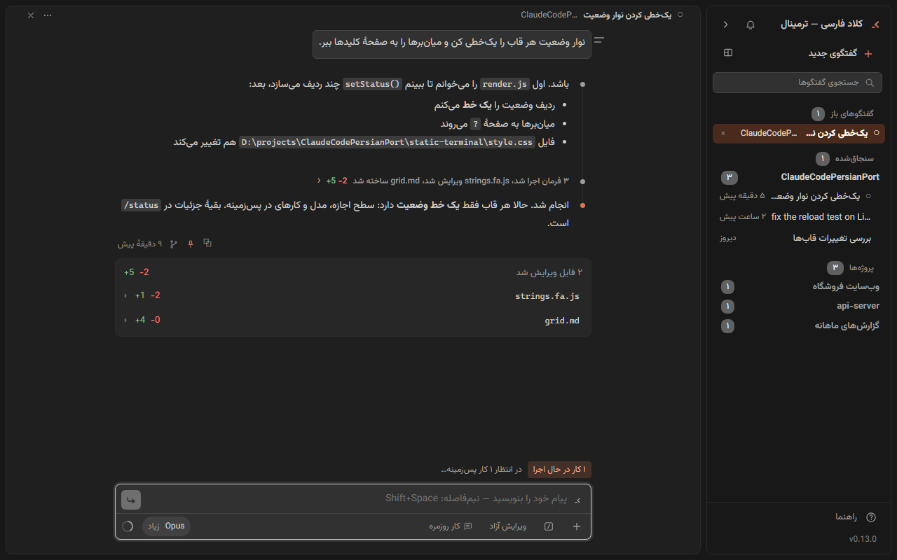

کلاد فارسی — ترمینال

کلاد فارسی
Claude Code
به فارسی، روی ویندوز
راستبهچپ، با فارسی و انگلیسی در یک خط
نیمفاصله با
Shift+Space
چند گفتگو کنار هم، در دو نسخهٔ پنجرهای و ترمینالی
رایگان و متنباز
طراحی تازه · نسخهٔ ۱.۱۳